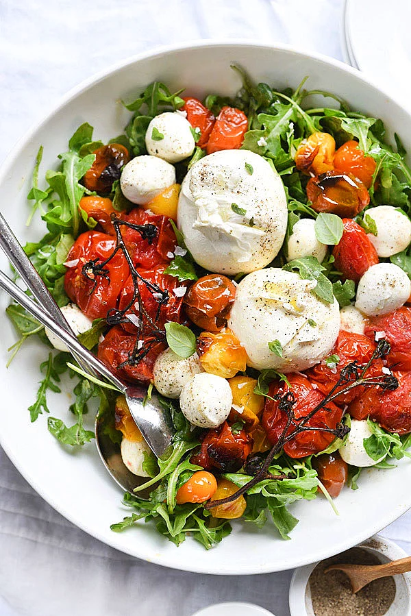

Çoban Salata

Malzemeler
<>4 adet orta boy domates
<>3 adet orta boy yeşil biber
<>2 adet orta boy salatalık
<>1 adet büyük boy kuru soğan
<>1/4 demet maydanoz
<>5 yemek kaşığızeytinyağı
<>4 yemek kaşığı taze sıkılmış limon suyu
Yapılışı
⚫Çoban salatayı hazırlamak için; sap kısımlarını aldığınız sulu ve orta boy domatesleri ince ince doğrayın.
⚫Kabuğunu soyduğunuz salatalıkları domateslerle uyumlu olacak şekilde kesin.
⚫Ortadan ikiye kestiğiniz ve çekirdeklerini çıkardığınız yeşil biberleri yarım ay şeklinde kesin.
⚫Kuru soğanı küçük parçalar halinde ya da arzuya göre ince piyazlık doğrayın. Maydanozu incecik kıyın.
⚫Kuru soğan dışında kalan doğranmış tüm malzemeyi salata kabında karıştırın. Servis tabağına aldığınız salata üzerine doğranmış kuru soğanları yerleştirin.
⚫Salatanın sosu için; zeytinyağı, taze sıkılmış limon suyu ve tuzu küçük bir kapta karıştırdıktan sonra salatanın üzerine gezdirin.
⚫Sosuyla harmanladığınız salatayı, sulanmaması için bekletmeden servis edin. Her türlü ana yemek yanında sevdiklerinizle paylaşın.
Tavuklu Sezar Salata

Malzemeler
<>2 adetfileto tavuk göğsü (200'er gramlık)
<>1/2 çay kaşığıtaze çekilmiş tane karabiber
<>1/2 çay kaşığı deniz tuzu
<>2 yemek kaşığı zeytinyağı
Salatası için
<>1 adet büyük boy yedikule marulu
<>1/2 su bardağı sızma zeytinyağı
<>1 adet yumurta sarısı
<>2 diş sarımsak
<>3 adet ançuez
<>1/2 tatlı kaşığıdi jon hardalı
<>1/2 adet taze sıkılmış limon suyu
<>1 tatlı kaşığı worcestershire sos
<>4 yemek kaşığı toz parmesan peyniri
<>1/2 çay kaşığı taze çekilmiş tane karabiber
<>1/2 çay kaşığı tuz
<>Servisi için
<>1 su bardağı kruton (fırınlanmış ekmek küpleri)
<>50 gramtraşlanmış parmesan peyniri
Yapılışı
⚫Fileto tavuk göğüslerini yıkadıktan sonra kağıt havlu yardımıyla iyice kurulayın.
⚫Deniz tuzu ve taze çekilmiş tane karabiber ile lezzetlendirin.
⚫Zeytinyağını ızgara izli döküm tavada kızdırdıktan sonra fileto tavuk göğüslerini arkalı önlü renk alana kadar yüksek ateşte kızartın.
⚫Servisi esnasında kullanmak üzere soğumaması için düşük ısıda, önceden ısıtılmış fırında bekletin.
⚫Salatanın yapımı için; marulun yapraklarını tek tek ayıklayın. Bol suda yıkadıktan sonra kağıt havlu yardımıyla kuruladıktan sonra buzdolabında bekletin.
⚫Sosu için; ançüezleri küçük parçalar halinde doğrayın.
⚫Sarımsağı tuz ilavesi ile havanda ezdikten sonra ançüezleri ekleyin ve 1-2 dakika kadar ezin.
⚫Limon suyu, dijon hardalı, toz parmesan peyniri, Worcestershire sos, taze çekilmiş tane karabiber ve yumurta sarısını ekledikten sonra karıştırın.
⚫Zeytinyağını azar azar ekleyip, tüm malzemeyi homojen bir hal alana kadar hızlıca çırpmaya devam edin.
⚫Kuruladığınız marul yapraklarını bıçak değdirmeden elinizle iri parçalara ayırdıktan sonra çukur bir salata kasesine alın.
⚫Krutonları salatanın üzerine serpiştirin. Fırında beklettiğiniz fileto tavuk göğüslerini dilimledikten sonra servis kasesine alın.
⚫Salatanın sosunu üzerine gezdirin ve arzuya göre tüm malzemeyi harmanlayın.
⚫Son olarak iri parçalar halinde rendelediğiniz ya da bir sebze soyucu yardımıyla traşladığınız parmesan peynirini salataya ekledikten sonra bekletmeden sevdiklerinizle paylaşın.
Fırınlanmış Domates ve Mozarella Salatası

Malzemeler
<>Cherry domates
<>Mozzarella peyniri
<>Roka
<>Taze fesleğen yaprakları
<>3 yemek kaşığı zeytinyağı
<>Tuz ve karabiber
<>4 diş sarımsak
<>2 çay kaşığı balzamik sirke
<>4 dilim prosciutto
Yapılışı
⚫Izgarayı yüksek ateşte ısıtın.
⚫Bir fırın tepsisini yapışmaz pişirme kağıdıyla kaplayın.
⚫Domatesin çekirdeklerini ve yumuşak kısımlarını çıkarıp atın.
⚫Domatesleri kestiğiniz kısım yukarı gelecek şekilde tepsiye yerleştirin.
⚫Domateslerin üstünü fesleğen yaprakları ve mozarella'yla kaplayın.
⚫3-4 dakika, mozarella altın rengine dönene kadar pişirin.
⚫Servis için, ekmeğin üzerine zeytin ezmesi sürüp prosciutto ve roka yerleştirin.
⚫Domatesi tabaklara koyup üstünde zeytinyağı gezdirin.
Avakado Soslu Baharatlı Salata Salatası
Malzemeler
<>2 adet patates
<>1 yemek kaşığı zeytinyağı
<>Tuz, karabiber, kimyon ve pul biber
<>Jaşlanmış siyah fasulye
<>Konserve mısır
<>Göbek marul
Avokado sos
<>Yarım avokado
<>Yarım bardak yogurt
<>Yarım bardak su
<>Kişniş
<>Sarımsak
<>Tuz
<>Limon suyu
Yapılışı
⚫Patatesleri baharatlarla harmanlayıp fırında pişirin.
⚫ Avokado sos için gereken malzemeleri ise blenderdan geçirin.
⚫Marul üzerine patatesleri ve fasulyeyi ekledikten sonra salatanızın üzerinde müthiş sosunuzu gezdirin.